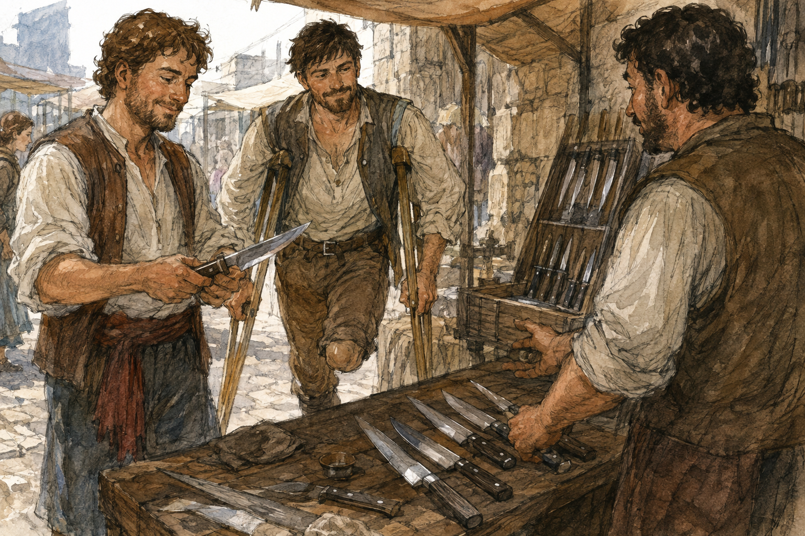

My thumb did not tingle in the morning.
This was disappointing.
Not medically.
Medically, it was excellent.
Scientifically, it was almost useless.
Emotionally, I wanted the thumb to do something interesting and was mature enough not to admit this to Hessa.
I wrote:
No tingling overnight. None on waking. Right hand normal.
Then I stopped.
I had briefly considered adding:
Tested by touching thumb to each fingertip.
I had not done that as a test.
I had buttoned my shirt.
This distinction mattered.
The dark green shirt had buttons.
Therefore ordinary dressing had become evidence.
Dangerous.
I closed the notebook.
Breakfast was porridge.
The keeper had put dried apple in it, which improved porridge by giving the mouth occasional reasons to continue.
I ate two bowls.
My right calf still remembered Pessa but had downgraded its complaint to background commentary. Hip similar. Residual limb baseline. Hands fine.
I had no Hessa appointment.
I could ask Pessa to train.
I wanted to.
I also wanted to tell Jorren that I had shaped mana badly.
These wants competed for perhaps twelve seconds.
Jorren won because he would be more impressed.
This was not true.
That was why it was funny.
I found him at the Guild.
He was arguing with Alden about boots.
Not metaphorically.
Actual boots.
Alden had one foot on a bench and was pulling the laces tight enough to restrict future generations.
Jorren stood over him.
“That is too tight.”
“It is not.”
“Your foot is changing color.”
“It is not.”
“It looks frightened.”
“Feet cannot look frightened.”
“That one can.”
Alden saw me.
“Tell him.”
I looked at the boot.
“What am I telling him?”
“That it's fine.”
Jorren said, “That he's strangling his foot.”
“I am not qualified.”
“You have a foot,” Alden said.
“One.”
Alden lowered his head.
Jorren closed his eyes.
I waited.
Alden said, “I walked into that.”
“Yes,” I said.
“Fuck.”
“Yes.”
Jorren pointed at me.
“You did that on purpose.”
“I answered accurately.”
“Monster.”
Alden loosened the boot.
“Pessa says new boots always feel wrong.”
“That does not mean remove circulation,” Jorren said.
“They're not new.”
“Then why are we doing this?”
“The heel slips.”
“Ah.”
That was different.
I leaned my crutches against the bench long enough to sit.
Alden demonstrated by standing and taking three steps.
The heel lifted.
Not much.
Enough.
“Sock?” I asked.
“Same socks.”
“Laces?”
“Same.”
“Boot stretched?”
“Maybe.”
Jorren said, “His foot shrank.”
“My foot did not shrink.”
“Have you been measuring it?”
“No.”
“Then we cannot rule out spontaneous foot reduction.”
Alden looked at me.
“Why are you friends with him?”
“I was lonely.”
Jorren put a hand over his heart.
I smiled.
This was going well.
Alden sat again and retied the boot differently.
I watched.
Then remembered why I had come.
“I shaped mana.”
Jorren said, “Good.”
There it was.
Exactly.
I hated him.
Alden's head snapped up.
“What?”
Jorren looked at me.
“Wait. Actually?”
“Yes.”
“When?”
“Yesterday.”
“What did you do?”
“I failed to move mana into my thumb.”
Silence.
Jorren frowned.
“That is less impressive.”
“Hessa phrased it that way too.”
Alden sat completely still.
“You shaped?”
“Altered.”
“What?”
“Hessa says altered.”
“What does that mean?”
“It means I performed a minimal supervised draw, then deliberately attempted to localize a very small amount into the pad of my right thumb.”
Jorren looked at my thumb.
I put it in my lap.
He grinned.
“No.”
“What?”
“You hid it.”
“I did not.”
“You did.”
“You looked at it.”
“Because you said thumb.”
“That does not give you jurisdiction.”
Alden said, “Did it work?”
“No.”
“What happened?”
“The mana moved broadly into my palm and wrist. My wrist rotated. Forearm engaged. It felt like the beginning of Barrier.”
Alden's face changed.
He understood that.
Not the medical caution.
The casting.
“Barrier?”
“Possibly. Hessa will not confirm it from one attempt.”
“But you felt it.”
“I felt something I recognized as the beginning of the setup.”
“That is Barrier.”
“Apparently not in a court of Hessa.”
Jorren leaned against the table.
“Did anything come out?”
“No.”
“Did you make a shield?”
“No.”
“Did you explode?”
“No.”
“Then this is a disappointing story.”
“I shaped mana.”
“You failed your thumb.”
“I altered mana.”
“You failed your thumb.”
Alden was still staring.
“Can you do it again?”
“No.”
“Can't or aren't allowed?”
“Not allowed.”
“Could you?”
“I don't know.”
That quieted him.
Good question.
I did not know.
The answer made the success feel smaller and larger at the same time.
Jorren tapped his own thumb against the table.
“Does it hurt?”
“No.”
“It tingled yesterday.”
“Now?”
“No.”
He tapped again.
I watched.
He noticed.
“Want to touch it?”
“No.”
“Want me to move mana into it?”
“You cannot.”
“Neither can you.”
Alden laughed so hard he had to sit back down.
I stared at Jorren.
“That was good.”
“I know.”
“I dislike you.”
“I know.”
Alden said, “When can you try again?”
“Tomorrow.”
“Shaping?”
“Assessment. Probably same instruction. Maybe.”
“Can I watch?”
“No.”
“You didn't ask Hessa.”
“I am not asking Hessa.”
“Why?”
Because I did not want Alden there.
The answer arrived immediately.
Interesting.
Not because he was annoying.
He was.
Not because it was private.
Maybe partly.
Mostly because Hessa's room was one of the few places where my competence was allowed to be tiny without becoming social.
A failed thumb was funny with Jorren afterward.
During?
No.
“I don't want you there.”
Alden blinked.
Then shrugged.
“All right.”
That easy.
No injury.
No argument.
I had spent more effort preparing the refusal than he spent receiving it.
Jorren watched me.
I looked at him.
He did not say anything.
Good friend.
Terrible person.
Alden stood and tested the boot again.
Heel still slipped.
“Still wrong.”
Jorren pointed.
“See?”
“It's better.”
“It is less wrong.”
“That is better.”
I looked at the boot.
“Is the problem the boot or the lacing?”
Alden said, “Boot.”
Jorren said, “Foot.”
I said, “Excellent. We have learned nothing.”
Alden kicked the bench.
Not hard.
“Pessa told me to fix it before tomorrow.”
That mattered.
“Why?”
“Because it rubbed yesterday.”
“Where?”
“Heel.”
“Skin broken?”
“No.”
“Then fix the boot.”
“I am trying.”
Jorren said, “He has been trying for twenty minutes.”
“I have been here seven.”
“It has felt like twenty.”
Alden pulled the boot off.
The heel inside was visibly worn smoother than the other.
There.
Actual evidence.
Jorren picked it up.
“Leather's gone soft.”
Alden took it back.
“Can it be fixed?”
“I don't know.”
They both looked at me.
“No.”
“What?”
“I am not becoming the boot expert because I noticed the boot.”
Jorren said, “You used to know leather.”
“I knew enough leather to make poor decisions confidently.”
“You had boots.”
“I had two.”
Alden glanced down.
Then up.
He did not apologize.
Good.
I appreciated that too.
“Tam?” he asked.
I thought of my damaged left boot and the salvage leather Tam still had.
“Tam works leather.”
“Would he look?”
“Probably if you pay him.”
Jorren said, “Solved.”
“No. Referred.”
“Same thing if you're lazy.”
Alden put on his other boot and carried the bad one.
“I'll go.”
“You have training?” I asked.
“Later.”
“Pessa?”
“Yes.”
He looked at me.
“You coming?”
“No.”
I had not decided until I said it.
That was interesting too.
I could have asked Pessa.
Hessa had no medical objection.
My body was baseline.
Pessa might have trained me.
But I had trained two days ago.
I had shaped yesterday.
Tomorrow Hessa again.
I did not want every open day assigned to improvement.
This was suspiciously healthy thinking.
I rejected it on principle.
“I have things to do.”
Jorren said, “Do you?”
“No.”
Alden laughed.
Then left with the boot under his arm.
Jorren waited until he was out the door.
“So.”
“No.”
“I didn't say anything.”
“You were going to.”
“Yes.”
“What?”
“Show me your thumb.”
“No.”
He held out his hand.
I stared at it.
“What?”
“Thumb.”
“No.”
“Greg.”
“Why?”
“I want to see the magical thumb.”
“It looks like a thumb.”
“I have never seen a magical one.”
“It is not magical.”
“It had mana in it.”
“Poorly.”
“Exactly.”
I put my right hand on the table.
He examined it with absurd seriousness.
Turned his head.
Leaned closer.
Did not touch.
“Remarkable.”
“Fuck you.”
“Strong shape.”
“It is a thumb.”
“Good color.”
“Jorren.”
“Five stars.”
I pulled my hand back.
He laughed.
Then, without transition:
“Come help me buy a knife.”
I stared.
“No.”
“Why?”
“I don't know what kind of knife.”
“Neither do I.”
“That makes me less useful.”
“You are not being hired.”
“What is it for?”
“Food.”
“You have a knife.”
“Mine is terrible.”
“You cut LIAR pepper stew with it.”
“That was a spoon.”
“Right.”
He pushed away from the table.
“Come.”
I considered Pessa again.
Not as obligation.
As option.
Then Jorren.
“Why me?”
“Because Alden will buy the largest one.”
“That is true.”
“Octavia will tell me exactly what freight cooks use and then make me feel stupid.”
“Also plausible.”
“Nessa will sell me one from under the counter and I don't want to know why she has it.”
I stood.
“Lyssa?”
“At work.”
“How do you know?”
“I saw her this morning.”
Independent schedules.
Fine.
“Sevren?”
“Road.”
“Fine.”
“Good.”
“This is not agreement.”
“You stood up.”
“That is not agreement.”
“It is with you.”
I hated that Pessa had spread.
We went to the market.
Jorren did not need a knife.
This became clear at the third stall.
He wanted a knife.
Different category.
His current knife cut food.
It was small, plain, and apparently offended him aesthetically.
“You want a nicer knife.”
“I want one that feels good.”
“That is not the same as needing one.”
“I never said need.”
I stopped.
There.
He had me.
I had recently purchased a shirt because I liked it.
I had no standing to prosecute desire.
“Fine.”
“Thank you.”
“I did not approve.”
“You stopped objecting.”
“Different.”
He picked up a narrow kitchen knife with a dark wooden handle.
The seller remained unnamed because I had learned that not every human being required permanent storage in my head.

Jorren tested the balance.
Not by waving it.
Good.
He held it.
Turned it.
Set it down.
Picked up another.
“What are you looking for?”
“I don't know.”
“That is reassuring.”
“I'll know.”
This was the kind of statement I distrusted professionally and understood personally.
He tried six.
Rejected two immediately.
Kept returning to the dark-handled one.
“Buy that one.”
“Why?”
“You keep picking it up.”
“That doesn't mean it's best.”
“You are buying a food knife, not appointing a magistrate.”
“What if the other one is better?”
“Better how?”
He looked at the other one.
“Steel.”
“Do you know that?”
“No.”
“Edge?”
“No.”
“Handle?”
“Dark one.”
“Weight?”
“Dark one.”
“Price?”
He asked.
The dark one cost more.
Not catastrophically.
Enough.
Jorren frowned.
“There.”
“What?”
“Now you have an actual tradeoff.”
“I liked it better before money.”
“Most things are improved by excluding price.”
He put both knives down.
We walked to another stall.
Then another.
He tried more.
None displaced the dark-handled knife in his head.
I could tell because he compared every handle to it without saying so.
I said nothing.
Personal record.
At the fourth stall, my right thumb tingled.
I stopped.
Not dramatic.
Same mild sensation.
Pad and side of thumb.
Maybe.
I did not squeeze it.
Did not touch fingertips.
Did not flex repeatedly.
I simply noticed.
Jorren had picked up a knife.
He looked at me.
“What?”
“Thumb.”
His face lost the joke.
“Tingling?”
“Yes.”
“Bad?”
“No.”
“Sit.”
“I am fine.”
“Sit.”
There was a crate beside the stall.
I sat.
Annoying when friends became reasonable.
“How long?”
“Just started.”
“Pain?”
“No.”
“Numb?”
“No.”
“Cold?”
“No.”
“You sound like Hessa.”
“I listened.”
That shut me up.
We waited.
The tingling faded.
Perhaps a minute.
Perhaps less.
I did not time it.
This was heroic.
“Gone.”
Jorren looked at my hand.
“Still buying knife.”
“What?”
“You're not going to Hessa?”
“She said report if it returns.”
“That sounds like going to Hessa.”
“It does.”
“You can report after the knife.”
He stared.
I reconsidered.
“No. You're right.”
“I know.”
“That was unpleasant.”
“I know.”
We turned back.
I did not feel ill.
No weakness.
No hand problem.
No residual-limb change.
No magic.
Just mild tingling that had returned after ordinary crutch use and market walking.
Which made crutch grip more plausible.
Or shaping aftereffect.
Or attention.
Or nothing.
I refused to rank them.
This was getting absurd.
Hessa was not pleased to see me.
Not because of the symptom.
Because I said, “It happened again,” before saying what.
Her face changed.
Then I explained.
She examined the thumb.
Normal.
Hand.
Normal.
Grip.
Normal.
Temperature.
Normal.
No tingling now.
“How long?”
“I did not time it.”
She looked pleased.
This was insulting.
“Good.”
“I knew you'd say that.”
“What were you doing?”
“Walking through the market with Jorren.”
“Crutches?”
“No, Hessa. I flew.”
She stared.
“Yes. Crutches.”
“Any unusual grip?”
“I don't know.”
“Carrying anything?”
“No.”
“Right hand dominant on crutch?”
“Not exclusively. Both.”
“Any wrist pain?”
“No.”
“Forearm?”
“No.”
She wrote.
“Does this change tomorrow?”
I asked.
“Maybe.”
I hated the word again.
“Meaning?”
“Meaning I will decide tomorrow.”
“Are we still shaping?”
“I will decide tomorrow.”
“Could this cancel it?”
“Yes.”
My happiness reduced.
Not disappeared.
Reduced.
Jorren leaned against the wall behind me.
Hessa looked at him.
“You are?”
“Jorren.”
“I know who you are.”
“Oh.”
“He's the knife problem,” I said.
Hessa looked at me.
“What knife problem?”
“No problem.”
Jorren said, “I was buying a knife.”
“Why?”
“Food.”
Hessa blinked.
I watched her decide not to ask.
Professional excellence.
She pointed at me.
“If the tingling returns again today, come back.”
“Yes.”
“If it returns and persists, come back.”
“Yes.”
“If you get numbness, weakness, coldness, pain, or trouble gripping, come back.”
“Yes.”
“No testing.”
“I know.”
“No changing how you hold the crutches to see if it happens.”
I had not thought of that.
Now I had.
Cruel.
“I won't.”
“No magical rehearsal.”
“I won't.”
She looked at Jorren.
“If he starts experimenting, stop him.”
Jorren brightened.
“I have authority?”
“No.”
“Damn.”
“You have hands.”
“So does he.”
“Yes, but apparently his are busy.”
I laughed.
Hessa did not.
We left.
Outside, Jorren said, “I like her.”
“No.”
“She gave me a job.”
“She explicitly did not.”
“I'm going to take it seriously.”
“That is worse.”
We returned to the knife stall.
The dark-handled knife was still there.
Jorren picked it up.
Then set it down.
“What?”
“I don't know.”
“You wanted it.”
“I still do.”
“Then buy it.”
He looked at the price again.
“I could get the cheaper one.”
“Yes.”
“It cuts.”
“Yes.”
“Probably.”
“Yes.”
“The dark one feels better.”
“Yes.”
He looked at me.
I realized what had happened.
“You brought me because you wanted permission.”
“No.”
“You did.”
“I wanted an opinion.”
“You wanted someone to tell you wanting the better-feeling one was sufficient.”
Jorren frowned.
“That sounds like something you would say now because of the shirt.”
“Possibly.”
“So?”
“So I am compromised.”
“Greg.”
“Buy the knife.”
He did.
No revelation.
No speech.
Coins.
Knife.
A simple sheath because carrying an exposed kitchen blade through Carrow was apparently discouraged by civilization.
We walked back toward the Guild.
My thumb did not tingle.
I did not check it.
Jorren carried the knife like he had acquired a minor title.
“Worth it?” I asked.
“I haven't cut anything.”
“You already like it.”
“Yes.”
“That may be enough.”
He glanced at me.
“Careful.”
“What?”
“You almost sounded normal.”
“Fuck you.”
“Better.”
At the Guild door, he stopped.
“Pessa?”
“What?”
“You going?”
I looked toward the yard.
Could.
Still time.
Body fine.
Hessa had not prohibited physical training.
Thumb currently normal.
But if I went to Pessa, I would spend the whole session wondering whether the thumb mattered.
Pessa would hate that.
I would hate that Pessa hated that.
Also I did not particularly want to train anymore.
That was enough.
“No.”
“Why?”
“I don't want to.”
Jorren nodded.
No praise.
Good.
“What are you doing?”
He pulled the new knife halfway out of its sheath.
“Finding food to cut.”
“That sounds dangerous.”
“Come supervise.”
“I am not qualified.”
“You have eaten food.”
“Extensively.”
“Exactly.”
I followed him.
My thumb remained a thumb.
For the moment, this was acceptable.